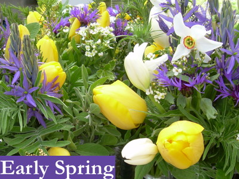
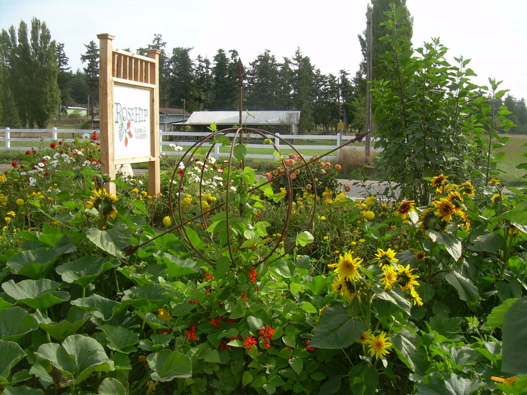
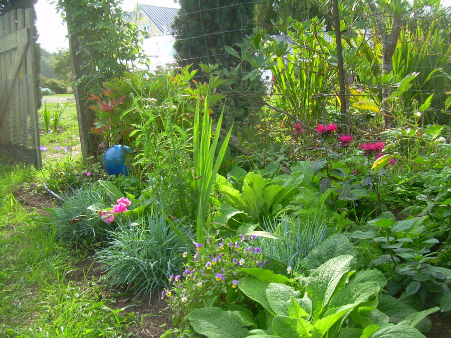
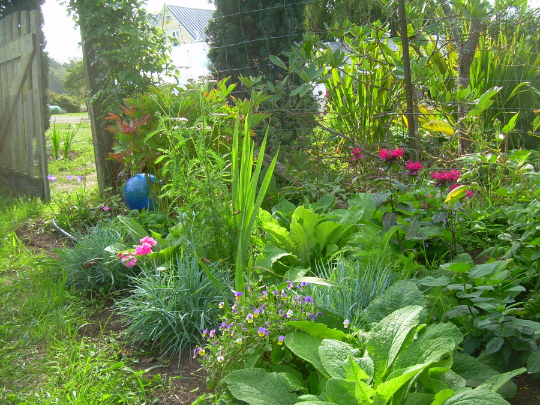

Cut Flowers
Flowers always make people better, happier and more helpful; they are Sunshine, Food, and Medicine for the soul. - Luther Burbank
The Rosehip Gardens are bursting with color and fragrance most of the year round. We have a great selection of annual and perennial cut flowers perfect for your special events or to brighten up your tables in your home or business. Like our produce, all of our flowers are grown without the use of chemicals of any kind. Your flowers are cut fresh and handled with care to maximize freshness and vibrancy.
- Want to brighten up your home? Find our flower bouquets at our stand at the Coupeville Farmers Market or in our farm stand.
- Got a wedding or special event planned? We’ve got the flowers. We can cut and arrange to your specifications or if you are feeling creative and want to save a bit of money, we can cut you buckets of flowers for you to arrange. Contact us for colors and availability.
- Own a local business? We provide weekly flowers for your dining tables, sales counter or store entrance. Contact us for a quote.


